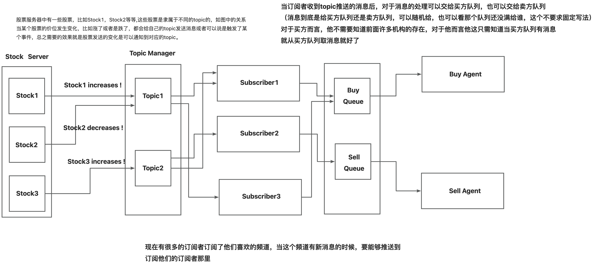

题目描述
马上双十一，需要给多个顾客发电子邮件，电子邮件的信息的内容跟平常不同，是跟双十一有关的内容，但是后面还有其他的购物节，到那时候电子邮件的信息又不一样，而且要求到平常的时候，电子邮件的信息又要回到原来平常的信息.
思考
好像没有题目描述,只有图示,貌似是我的锅

其实,你们已经见到过了
这么说多多少少还是有点抽象,以实际 IoT 开发的一个小场景为例
其实只是我被重构多次折磨后不得不做罢了
学设计模式有一段时间,似乎有种学了但没咋学的感觉 -- 我*，如学
这是个挺尴尬的事情,好像仅仅只是将设计模式当作一门课水过去,看那些源码还是困难,或者当数量如SpringBoot源码动则十几个更甚如设计模式套设计模式,还是无法理解
我们写程序,总是说要有个场景,有个场景,其实回顾一下,似乎可以总结为,将物理世界的问题投影到数字世界中 咦,我们试着从这个角度回顾一下,似乎真的是这样
似乎好像这个观念对于计算机体系来说都可以这样认为,下面的设计模式好像就可以这么用